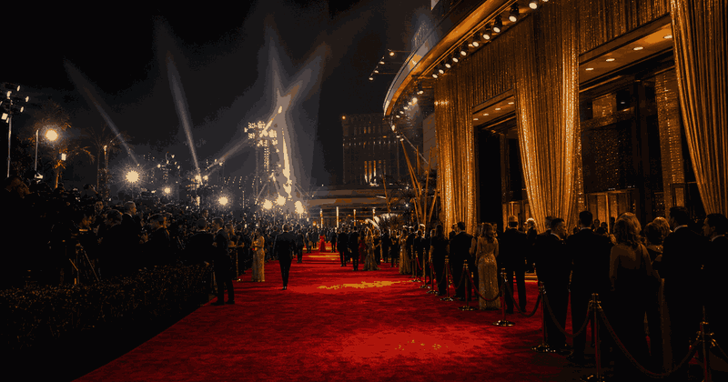

Culture / Awards
Oscars
A compact Oscars archive for comparing winners by decade, year and award category. Start with the main prizes, then add more categories when you need detail.
 More awards
Awards topic
More awards
Awards topic
More award ceremonies, film culture, music nights and entertainment events.
Vinnare per år
Välj en eller flera kategorier. Åren visas som rader.
Top lists
Oscar records
Most wins, nominations and headline winner lists from JSON.
Fun facts
Quick Oscar facts
Verified context, category quirks and viewing notes that make this award different.
LoadingRecords are loading from oscars-records.json.
HotelsStay for Oscars week
TripBuild the Los Angeles awards week
Best baseHollywood / West Hollywood
Closest to Dolby Theatre, screenings, restaurants and awards-week nightlife.
AirportLAX or Burbank
LAX has the widest routes; Burbank can be easier for Hollywood-area stays.
Reality checkPublic access is limited
Most visitors plan around screenings, museums, parties and Los Angeles film culture.